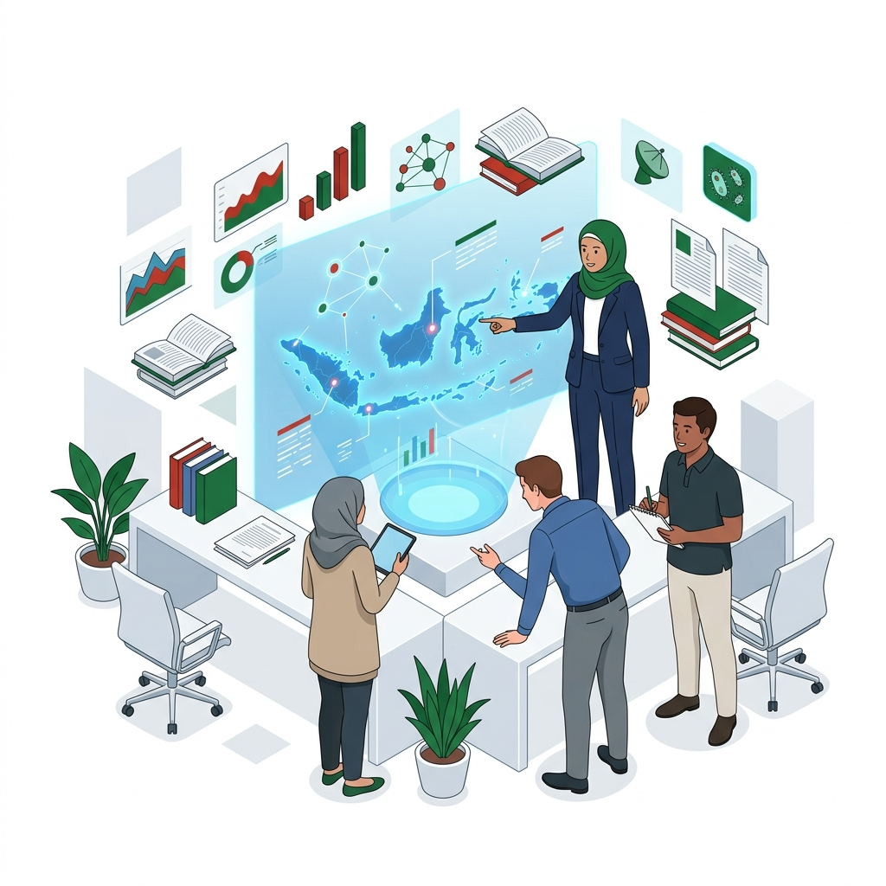
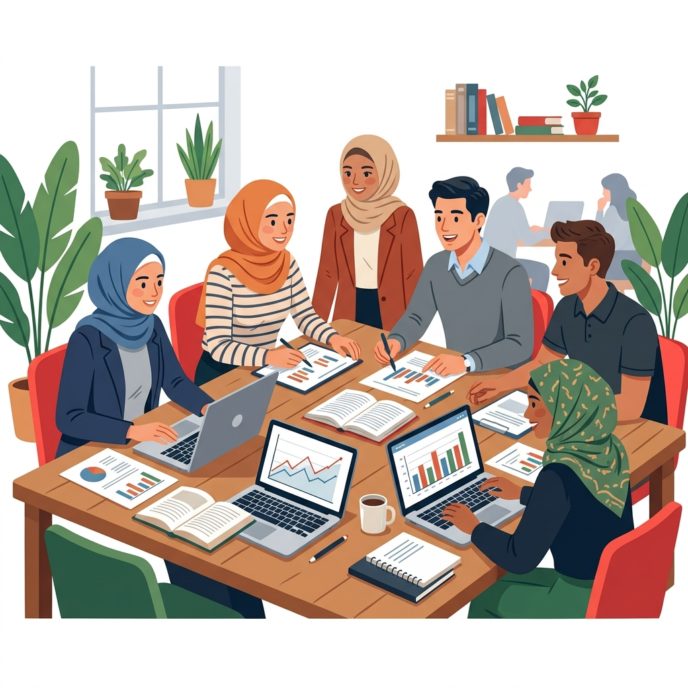

Islamic Social Finance
Researching zakat ecosystems, philanthropic dynamics, and institutional development to strengthen Indonesia's Islamic social finance sector.
Zakat · Waqf · PhilanthropyWe specialise in Islamic Social Finance, Zakat Ecosystem Development, and Evidence-Based Policy — contributing to Indonesia's sustainable national progress.

We bridge evidence and practice across three major domains of social impact research.
Researching zakat ecosystems, philanthropic dynamics, and institutional development to strengthen Indonesia's Islamic social finance sector.
Zakat · Waqf · PhilanthropyProducing evidence-based policy briefs and strategic blueprints that inform national policymakers and institutional stakeholders.
Policy · Strategy · PlanningInvestigating the intersections of disaster recovery, environmental sustainability, and community resilience through rigorous M&E frameworks.
Sustainability · Disaster · M&E
We are the research division of Forum Zakat, dedicated to producing rigorous, contextually relevant research that drives meaningful change in Indonesia's social finance landscape.
Our work spans systematic literature reviews, impact measurement instrument development, comparative analyses, and strategic blueprint documents — all guided by a commitment to bridging academic rigor with real-world applicability.
Explore our ongoing and completed research projects across diverse domains of social impact.
Investigating the feasibility of repurposing post-flood sludge as raw material for brick production. Developing a robust M&E framework for circular-economy applications within disaster-recovery contexts.
A comprehensive outlook document mapping the current state and trajectory of Indonesia's zakat ecosystem, with evidence-based strategic recommendations through 2030.
An analytical framework for the institutionalisation of zakat across four dimensions: legal frameworks, theological foundations, behavioural dynamics, and organisational structures.
Policy brief identifying strategic synergies between the Ministry of Manpower and zakat organisations to address labour market challenges through Islamic social finance interventions.
Systematic analysis of programmatic overlap between Indonesia's social security system and zakat initiatives, identifying opportunities for institutional integration to enhance development impact.
A strategic blueprint document outlining long-term milestones and actionable strategies to guide the development of Indonesia's national zakat ecosystem towards 2045. Adopted by multiple stakeholders as a reference framework.